地政学
ニコシアはキプロス共和国の首都であり、北側には事実上の別行政が置かれる分断都市です。国連緩衝地帯、検問所、大使館、EU制度が旧市街の路地に入り込み、東地中海の安全保障を日常化します。交渉は今も続きます。
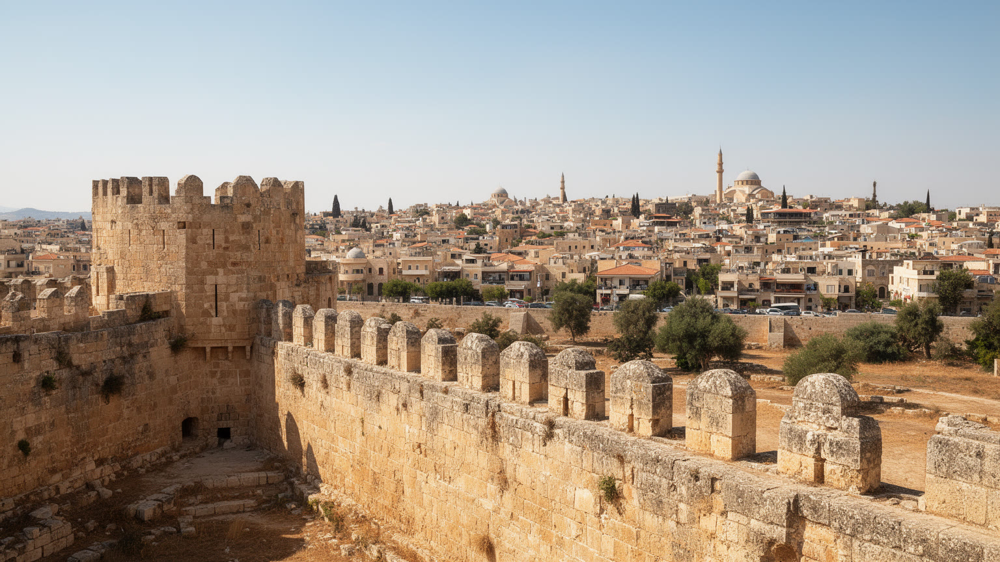
🇨🇾 キプロス / 東地中海 / World City Atlas
城壁の内側を国連緩衝地帯が横切るキプロスの首都。行政、金融、大学、正教会、モスク、検問所、旧市街の市場が近い距離で重なります。
都市の骨格
ニコシアは海を持たない島の首都です。ヴェネツィア時代の城壁、英国統治の街路、共和国の官庁、南北の検問所が、歩ける距離で政治と生活を重ねています。
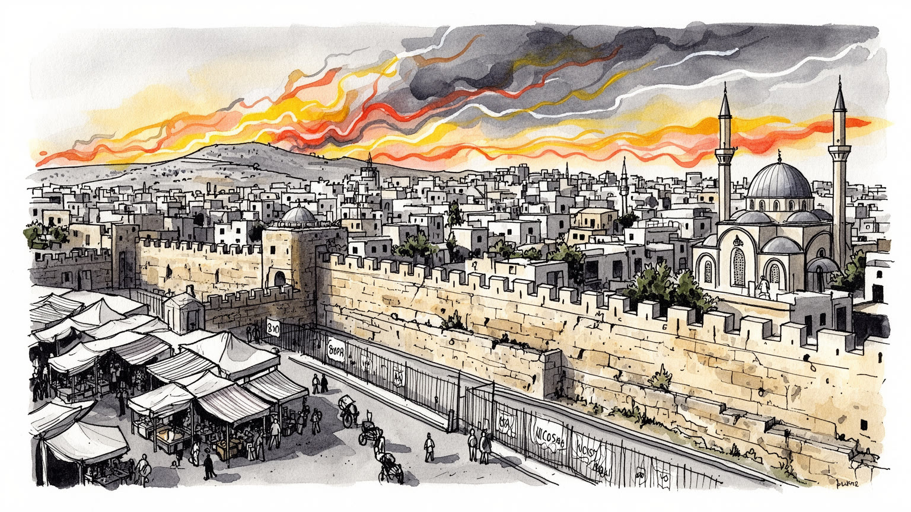
ニコシアはキプロス共和国の首都であり、北側には事実上の別行政が置かれる分断都市です。国連緩衝地帯、検問所、大使館、EU制度が旧市街の路地に入り込み、東地中海の安全保障を日常化します。交渉は今も続きます。
金融、保険、法律、会計、行政、大学、医療、商業、観光が雇用を作ります。海港都市ではないため、経済の重心は事務、専門職、公共部門、教育に寄り、カフェや小売の現場労働も都心を日々支える重要な仕事です。
ギリシャ正教会、モスク、アルメニア教会、カトリックの記憶が城壁内に残ります。鐘、ミナレット、礼拝、祝祭、家族の食卓は、分断を越えて都市の暦を作り、言語と宗教の違いを路地で見せます。食文化にも表れます。
レドラ通り、城壁門、博物館、市場、カフェは歩いて巡れますが、住民には家賃、暑熱、自動車依存、若者雇用、南北移動の手続きが身近です。観光の魅力は、政治の境界と普通の日常生活を同時に見る点にあります。
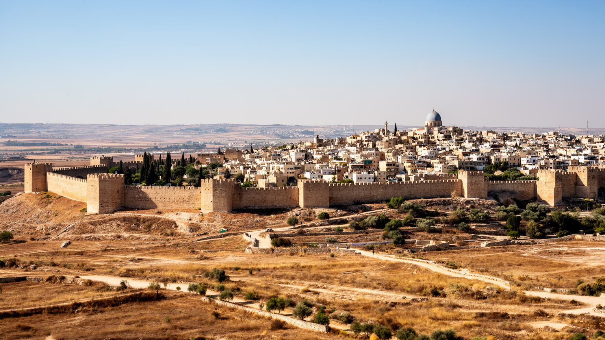
ニコシアの第一印象は、東地中海の島国の首都でありながら海に面していないことです。都市はキプロス中央部のメサオリア平原にあり、周囲の山地、農地、内陸道路を通じてラルナカ、リマソール、キレニア方面へつながります。旧市街を囲むヴェネツィア時代の星形城壁は、観光の輪郭であると同時に、近世の防衛、オスマン統治、英国植民地期、現代の分断を一つの地図に重ねる装置です。城壁内では、曲がった路地、低層住宅、工房、教会、モスク、商店、空き家、修復建築が細かく並びます。城壁外には共和国の官庁、大学、病院、金融機関、郊外住宅、幹線道路が広がり、旧市街だけでは見えない現代の生活圏を作っています。内陸都市であるため、港湾の迫力よりも、行政、金融、教育、国境管理、観光歩行が都市の骨格になります。ニコシアを読むには、城壁を古い景観として眺めるだけでなく、その内側と外側で家賃、交通、修復、空き店舗、移民労働、観光の圧力がどう変わるかを見る必要があります。円形の美しい都市形態は、同時に境界と断絶を記憶する形でもあります。乾いた平原にあることは、夏の暑さ、緑地の少なさ、水利用にも影響します。城壁の門は歴史的な入口であるだけでなく、現在の歩行者、車、観光客、住民の流れを調整する都市装置です。内陸の首都らしさは、海へ向かう道路と、島の中央に集まる制度の力が交差するところに現れます。
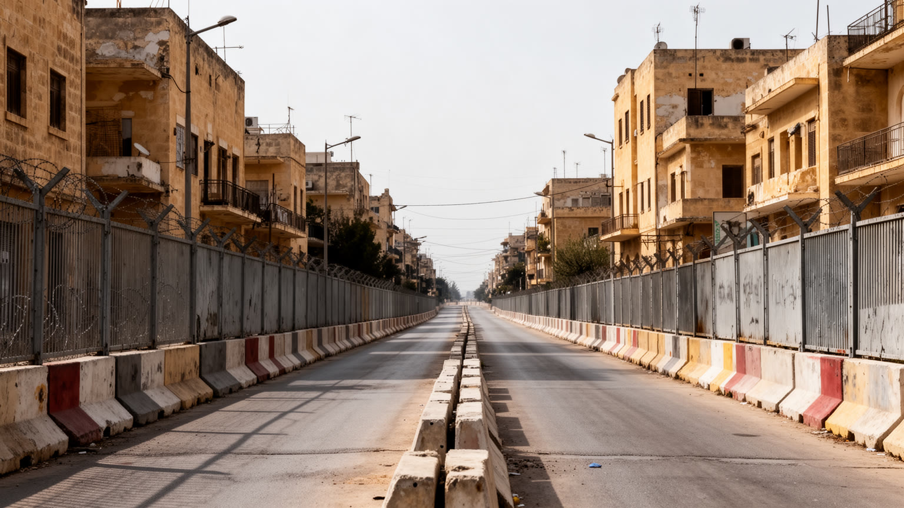
ニコシアは、ヨーロッパで最後の分断首都と呼ばれることが多い都市です。城壁旧市街の中心部を国連緩衝地帯が通り、南側のキプロス共和国行政と、北側のトルコ系キプロス人行政が向かい合います。検問所を通れば人びとは買い物、仕事、観光、家族訪問のために移動できますが、境界は単なる通行手続きではありません。住宅の所有権、失われた近隣、軍事施設、記憶、教育、言語、国際承認の問題が、路地の曲がり角に具体的な形で残ります。レドラ通りの歩行者検問所は、観光客にとって珍しい体験に見えますが、住民にとっては政治問題が日常の動線に入り込む場所です。分断は都市を止めたわけではなく、南北それぞれに商業、行政、学校、礼拝、住宅、文化活動を生みました。しかし、境界があることで都市全体の交通、修復、投資、遺産管理は常に複雑になります。ニコシアの地政学を読むには、国際会議や外交文書だけでなく、閉ざされた通り、修復された家、検問所の列、再会の挨拶、使われなくなった建物を見る必要があります。政治は抽象的な線ではなく、毎日の歩行と沈黙の中にあります。境界の近くでは、店の客層、通貨の使い方、携帯電話の表示、警備の視線まで変わります。若い世代には越境が比較的日常化していても、家族の記憶や学校で学ぶ歴史は簡単には同じになりません。都市の再接続は、道路を開くことだけでなく、互いの生活を知る時間を積み重ねる作業です。
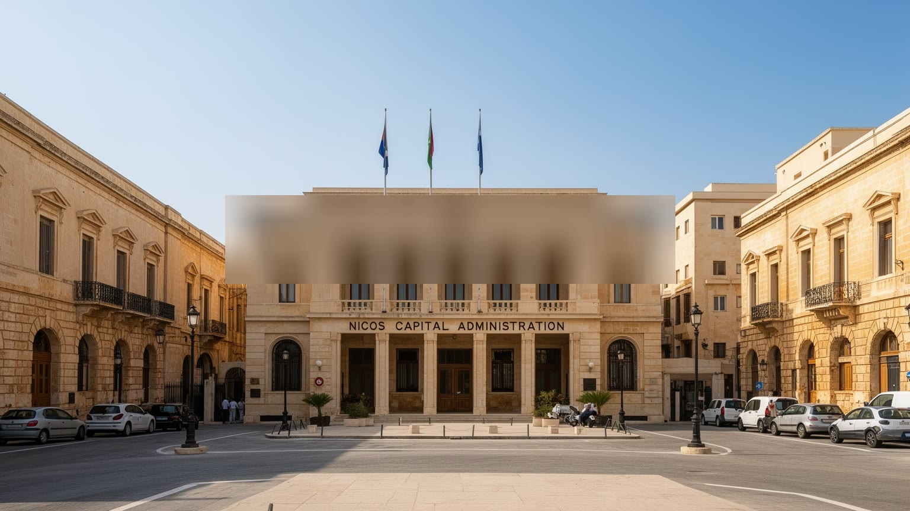
ニコシアはキプロス共和国の政治と行政の中心です。大統領府、議会、裁判所、官庁、中央銀行、外国大使館、EU関連の制度、専門職サービスが市内に集まり、島の意思決定を内陸から動かしています。首都であることは、巨大な官庁街だけを意味しません。行政手続き、税務、法律事務所、会計事務所、ロビー活動、報道、大学の政策研究、国際機関との協議が、カフェや小さな事務所の密度として街に現れます。キプロスはEU加盟国でありながら、島内に未解決の分断を抱えるため、首都の制度空間は国内政治、欧州法、国連、トルコ、ギリシャ、英国基地、東地中海のエネルギーと安全保障を同時に意識します。住民にとって首都性は、役所へのアクセス、公共雇用、学校、病院、交通規制、抗議行動として経験されます。ニコシアを単なる歴史都市として見ると、この制度の重さを見落とします。政治的な中心であることは、若者の就職先を生み、専門職を集める一方、家賃や通勤、自動車渋滞、公共空間の緊張も強めます。首都の街路は、観光の舞台である前に、国家を運営する日々の作業場です。小さな島国では、中央政府との距離が近いことが生活の安心にも不満にもなります。公共部門で働く人、裁判所へ向かう人、許認可を待つ事業者、デモに参加する市民が同じ通りを使います。制度の集中は効率を生む一方、地方や沿岸都市との均衡をどう保つかという課題も残します。
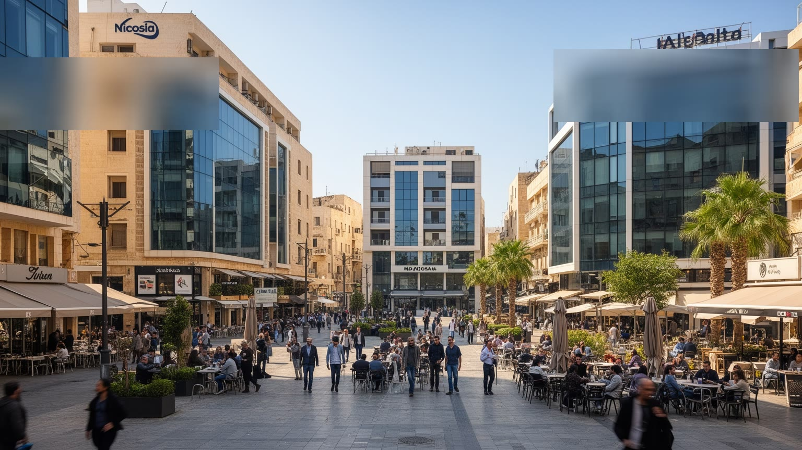
ニコシアの経済は、海港や重工業よりも、金融、保険、法律、会計、IT、教育、医療、行政、小売、観光サービスの組み合わせで成り立っています。キプロス経済全体は観光、専門職サービス、海運関連、建設、不動産、国際ビジネスに強く、首都はその制度面と事務面を受け持ちます。銀行の本店、監督機関、法律事務所、会計事務所、企業登記、大学、研究機関が近いことは、島外の投資や欧州規制への対応を支える力になります。一方で、この経済は国際的な税制、金融監督、制裁、観光需要、周辺地域の紛争に影響されやすい面もあります。オフィスで働く専門職の背後には、カフェの従業員、清掃、警備、配送、ホテル、病院、学生向け住宅、移民労働があり、都市のサービス経済を支えています。ニコシアの富を読むには、金融街の看板だけでなく、大学周辺の賃貸、旧市街の小売、公共部門の雇用、若者の賃金、外国人労働者の生活を見る必要があります。国際性は華やかな会議室だけでなく、多言語の書類、労働許可、家族送金、観光客の支払いにも現れます。専門職都市としての強さは、制度への信頼と、働く人の生活条件が両立して初めて続きます。観光地としてのキプロスが海辺の消費に支えられる一方、ニコシアはその契約、保険、行政、教育を処理する背後の都市でもあります。景気が良い時ほど、家賃とサービス価格は上がり、低賃金の現場労働者には都市が使いにくくなります。経済を見る視線は、オフィスの成功と生活費の負担を同時に捉える必要があります。
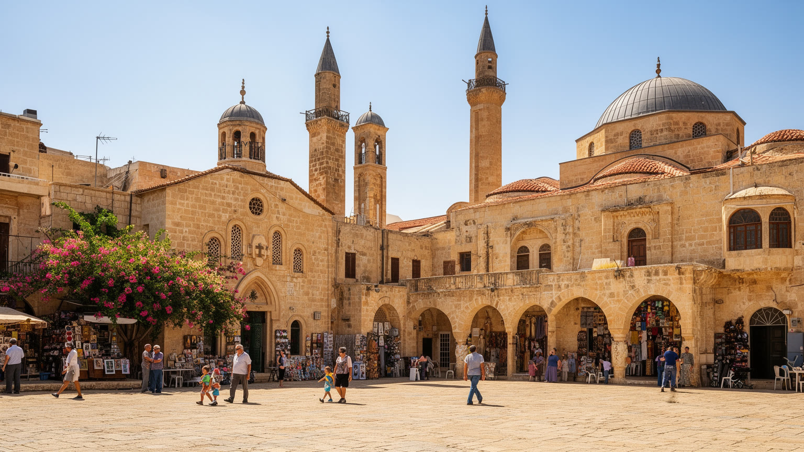
ニコシアの宗教空間は、キプロスの複雑な歴史を凝縮しています。ギリシャ正教会は多数派の信仰と国民的記憶を支え、教会、修道院、聖職者、祝祭、家族の儀礼が生活の節目を形作ります。旧市街にはオスマン期のモスクやハン、浴場、改修された宗教建築も残り、北側ではトルコ語の祈りと日常が都市の別のリズムを作ります。アルメニア人、マロン派、ラテン・カトリック、英国統治期以降の諸教会の記憶も、学校、墓地、建物、共同体の行事に刻まれています。宗教は観光資源である前に、結婚、葬儀、復活祭、ラマダン、聖人祭、寄付、食の習慣、家族の集まりを支える社会の仕組みです。同時に、信仰の場所は政治的な帰属や喪失の記憶とも結びつきます。かつて近隣の中心だった教会やモスクが緩衝地帯の近くに残るとき、建物は祈りの場所であると同時に、誰がその地区に住んでいたのかを語る記録になります。ニコシアの信仰を見るには、建築様式を比較するだけでなく、鐘の音、礼拝の時間、祭日の交通、家族の食卓、少数派の学校まで見る必要があります。宗教は分断を深める言語にも、共通の記憶を探す入口にもなります。観光客が教会やモスクへ入る時、その場所は写真の背景である前に誰かの祈りの場です。修復された建物の使われ方、祭日の混雑、墓地の管理、学校の言語を見れば、信仰が都市の公共性をどう支えているかが分かります。宗教の層を丁寧に読むことは、ニコシアの政治を人の生活に戻して理解することです。
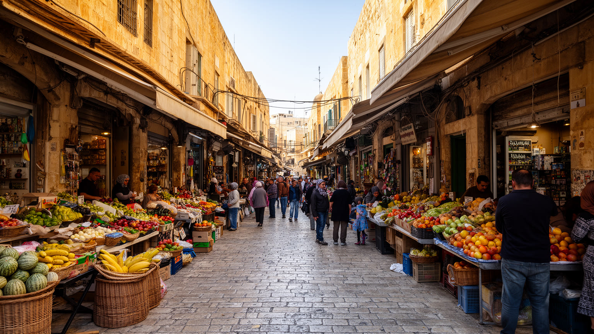
城壁内の旧市街は、ニコシア観光の中心であると同時に、住民の商いと記憶が残る生活空間です。レドラ通りやオナサゴル通りにはカフェ、土産物店、衣料品店、ギャラリー、書店が並び、周辺の路地には小さな工房、古い住宅、空き家、移民系の商店、修復された建物が混在します。市場や軽食の店では、ハルミ、スブラキ、菓子、コーヒー、季節の野菜が日々の買い物と観光をつなぎます。旧市街の活性化は建物の保存に役立ちますが、家賃上昇や短期滞在向け店舗の増加によって、古い住民や小商いが押し出される危険もあります。緩衝地帯に近い地区では、閉じた建物と再生されたカフェが隣り合い、政治の境界が不動産価値にも影響します。歩きやすい街を作ることは重要ですが、単に観光客向けの表面を整えるだけでは、旧市街は生活の厚みを失います。ニコシアの商業を読むには、城壁の美しさだけでなく、朝の搬入、家族経営の店、学生のアルバイト、外国人労働者、空き店舗の修復費用、夜の安全を見なければなりません。旧市街の魅力は、過去を保存することと、現在の住民が使い続けることの緊張の中にあります。小さな店が閉じて同じような観光店舗ばかりになれば、街の記憶は薄くなります。逆に、住民向けの八百屋、修理店、食堂、宗教施設が残れば、訪問者も本物の生活の速度に触れられます。商業の更新は、保存と日常利用を結び直す作業です。
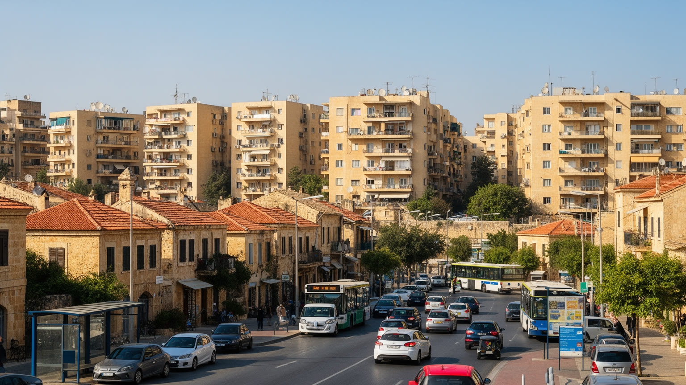
ニコシアの暮らしは、城壁内の歩ける旧市街だけでは説明できません。多くの住民は城壁外の集合住宅、低層住宅、郊外の家、大学周辺の賃貸、北側の住宅地に暮らし、仕事、学校、病院、買い物のために車で移動します。公共交通は改善されつつありますが、日常の移動は自動車に大きく依存し、夏の暑さ、駐車、渋滞、燃料費、歩道の不足が生活の質を左右します。若い世代には家賃と住宅購入の負担が重く、学生や外国人労働者にとっては手頃な部屋、契約、通勤、言語、行政手続きが課題になります。高齢者にとっては、暑い日中に歩ける距離、医療へのアクセス、近所の店、家族の支援が重要です。分断都市であることは移動にも影響し、検問所を越える通勤や買い物、家族訪問には心理的な距離と手続きが伴います。ニコシアの住宅問題は、地中海的な明るい暮らしの裏側にある家計、交通、暑熱、孤立の問題です。都市が成熟するには、旧市街の美化だけでなく、日陰、歩道、バス、手頃な住宅、学生の住まい、高齢者が休める場所を整える必要があります。生活のしやすさは、城壁の内外をつなぐ移動の質で決まります。大学や病院の周辺では短期賃貸と駐車需要が増え、近隣の静けさや家賃に影響します。歩ける中心を掲げるなら、郊外から中心へ来る人の交通手段も同時に整えなければなりません。住みやすい首都とは、観光客が歩ける街であるだけでなく、住民が暑い日にも無理なく用事を済ませられる街です。
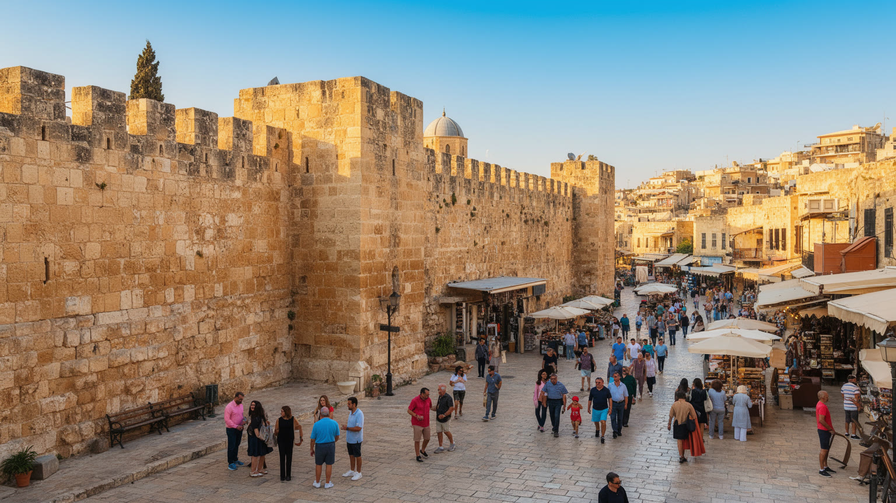
ニコシア観光の魅力は、海辺のリゾートとは違い、歩いて歴史の層を読むところにあります。キプロス博物館、ビザンティン美術館、ファマグスタ門、旧市街のハン、教会、モスク、城壁、緩衝地帯周辺の通りを巡ると、古代、ビザンツ、ラテン、ヴェネツィア、オスマン、英国、共和国、分断後の現在が狭い範囲に重なります。観光客は検問所を越えて北側の市場や歴史建築を訪ねることもできますが、その体験は政治的な背景への理解を必要とします。境界を珍しい写真として消費するだけでは、失われた家、移動できなかった人、複数の共同体の記憶を見落とします。旧市街のカフェや土産物店は都市に収入をもたらす一方、住民の買い物や静かな生活を変えることもあります。観光の成功は、遺産を保存し、住民が使う市場や路地を残し、分断の記憶を軽く扱わないことで初めて成立します。ニコシアを訪れる価値は、壮大な一つの名所よりも、教会の鐘、モスクの影、英国風の建物、検問所、学生のカフェ、空き家の修復が並ぶ密度にあります。観光は、東地中海の複雑さを短い徒歩の中で学ぶ入口になります。食もその入口です。コーヒー、ハルミ、焼き菓子、メゼ、屋外席の長い会話は、観光客を日常の速度へ近づけます。旅程を急がず、境界の前で立ち止まり、博物館の説明と路地の沈黙を合わせて読むことが、この都市への敬意になります。
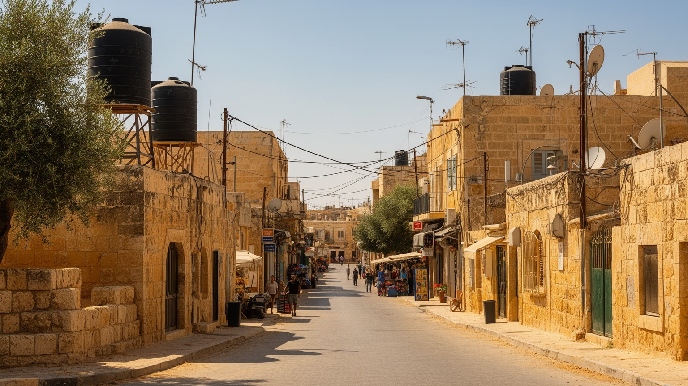
ニコシアの気候は、長く暑く乾いた夏と、比較的穏やかで雨の多い冬に特徴があります。内陸にあるため海風の緩和を受けにくく、夏の日中の暑さは歩行者、建設労働者、配達員、高齢者、学生、観光客に強い負担をかけます。気候変動で熱波が強まるほど、日陰、緑地、断熱、公共交通、涼める公共空間、夜間の安全な歩行が重要になります。水も大きな制約です。キプロス全体では降水量の変動、地下水、ダム、淡水化、農業利用、観光需要が水管理を難しくし、首都の生活や都市緑化にも影響します。古い建物の修復では、景観保存だけでなく、暑さへの対応、断熱、換気、エネルギー効率を考える必要があります。自動車依存が強い都市では、排気、駐車場、舗装面が暑さを増幅し、歩きやすさを損ないます。ニコシアの気候課題は、砂漠のような極端なイメージではなく、毎日の通学、通勤、買い物、観光歩行の中で経験されます。都市が快適であり続けるには、城壁内の観光路だけでなく、郊外住宅地、大学周辺、バス停、病院前、検問所の待機場所にも日陰と休息を増やす必要があります。暑さへの備えは生活の質そのものです。冬の雨は貴重な水をもたらしますが、短時間の強雨は排水や道路交通に負担をかけます。古い石造建築の保存と現代的な断熱の両立も簡単ではありません。気候に強い首都を作ることは、観光の快適さだけでなく、屋外で働く人と高齢者の安全を守ることです。
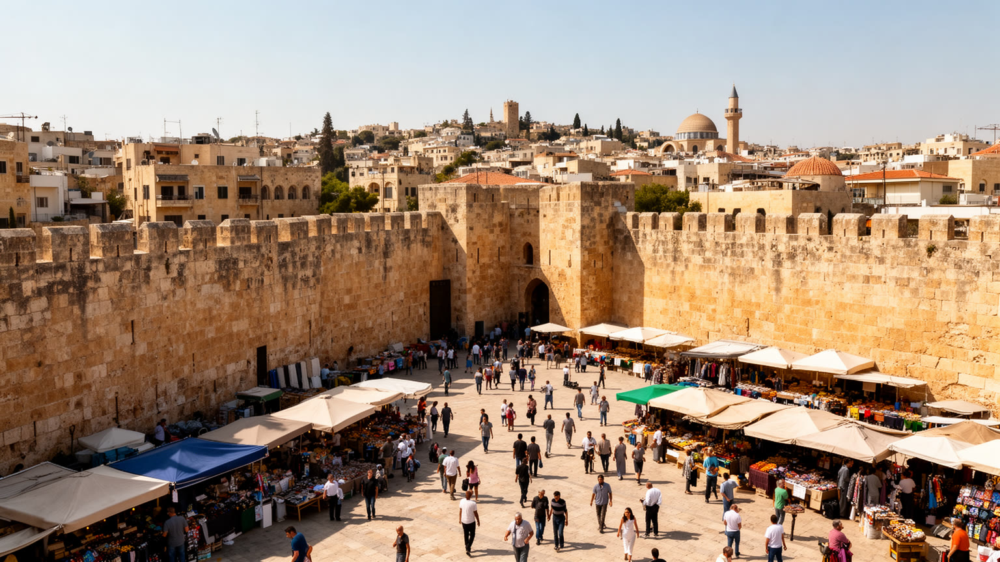
ニコシアは、人口規模や経済規模だけでは測れない重要性を持つ都市です。城壁旧市街、国連緩衝地帯、共和国の官庁、北側の行政、金融と専門職、大学、教会、モスク、市場、住宅地が、歩けるほど近い距離で重なります。世界都市という言葉を巨大金融都市だけに使うなら、ニコシアは小さく見えるかもしれません。しかしここでは、国際承認、EU法、国連、東地中海の安全保障、宗教、移民、観光、家族の記憶が日常の街路に入り込んでいます。分断は悲劇の記号であるだけでなく、住民が毎日調整しながら暮らす条件です。検問所を越える買い物、旧市街の修復、学生のカフェ、教会とモスクの共存、夏の暑さ、家賃、若者の就職を同時に見ると、ニコシアは現代都市の複雑さを凝縮した場所になります。観光客にとっては、境界を歩き、博物館を訪ね、市場で食べる都市です。住民にとっては、手続き、仕事、教育、祈り、家族、暑さ、住宅費を抱える生活都市です。ニコシアを読むことは、政治の線が街を分けても、人の移動、商い、信仰、記憶が完全には止まらないことを読むことです。その小さな動きの積み重ねが、東地中海の首都としての重みを作っています。都市の未来は、分断を劇的に解く合意だけに依存しているわけではありません。歩道を整え、空き家を修復し、学生と高齢者が住める住宅を保ち、互いの市場や祈りの場所を尊重する日々の改善も重要です。ニコシアの価値は、境界の存在を隠さず、それでも生活を続ける人びとの実践を見せる点にあります。